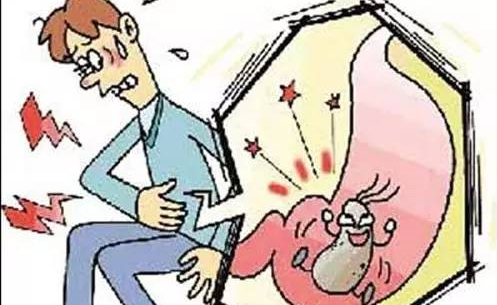
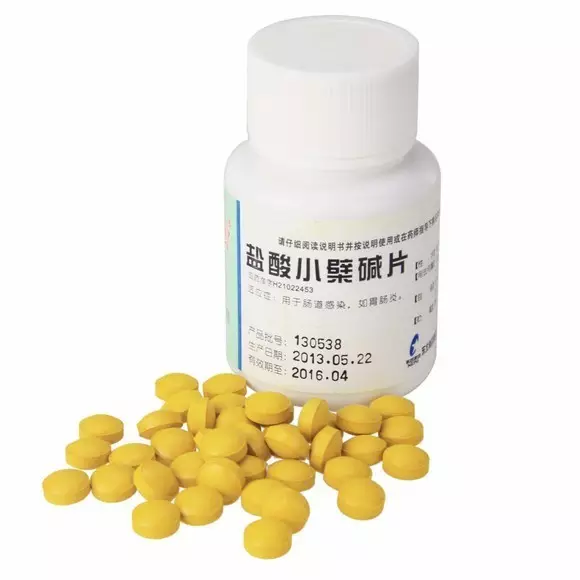
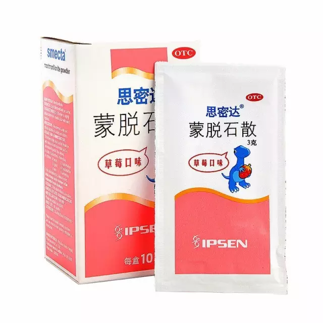
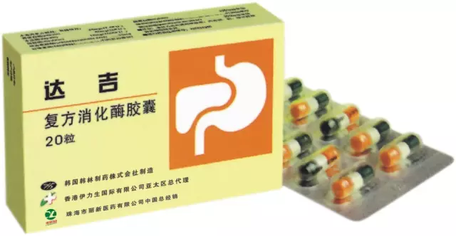

最近气温骤降，雨水不断，想必大家都开启了御寒模式了吧~该是时候多吃点东西补补身子，好抵御过瑟瑟的寒风啊。可令人烦恼的事也随之而来了，吃得杂吃得多，急性腹泻常常不经意间就缠上来了。遇到腹泻该怎么办呢？小编今天就教你怎样赶走急性腹泻的阴霾~
大家最常见的急性腹泻呢，应该就是俗话讲的“吃坏肚子”了吧，细菌感染和食物中毒是最常骚扰我们的。食用经大肠杆菌、沙门菌等细菌污染，或者含有一些毒素（如为煮熟的扁豆或者被苍蝇污染等）的食物，就可能会引起不同程度的腹痛、腹泻、呕吐、发热。路边小摊和卫生程度不达标餐馆的食物常常会细菌超标，大家尽量避开这些小馆子；还有生的海鲜常常带有引起腹泻的弧菌，所以海鲜最好不要生食哦。

肠胃功能紊乱也是造成腹泻的一大重要因素。大量食用生冷食物、腹部受凉会使肠蠕动加快，引起腹泻；而暴饮暴食、饮食不规律也会导致胃动力不足，消化过程中肠胃内部渗透压过高，机体失水从而使粪便变稀。
还有病毒也可能会引起病毒性腹泻哦。
这样看来，一个急性腹泻也不是那么简单的事。
【常见药物】
黄连素：一种生物碱，学名叫盐酸小檗（bò）碱，他可是家家必备的居家良药，也是我国运用很久的中药，具有明显的抑菌效果，治疗细菌性的急性腹泻。而且黄连素价格实惠，几块钱就可以买一瓶（如果是黄连素复合制剂那价格会贵一些，大家在购买的时候注意看清哦）。


蒙脱石散：他还有一个很洋气的名字叫思密达（哈哈哈），这是一味很有效的药，他不仅能包裹和抑制消化道内的病菌和毒素，随排泄排出体外，还能够附着在消化道黏膜上，有效的提高了提高了消化道黏膜的抗性。止泻效果亲测超一流，肠胃不好的小编一直备了蒙脱石散在家里哦。不过思密达虽好，也不能贪多哦，要是喝的太多了反而会便秘的哦，基本上不是特别严重的急性腹泻喝一到两次就不再跑厕所了。
氟哌酸：这味药长辈常常会推荐服用，但其实长辈们对这味药的使用存在一定的误区。氟哌酸其实就是诺氟沙星，是一种喹诺酮类广谱抗生素，能治疗细菌性的急性腹泻。不过一腹泻就服用氟哌酸不太好哦，毕竟是一种抗生素，长期服用也会导致肠道内菌群紊乱，导致有害菌增多反而会加重病情哦。小编建议先服用黄连素哦，副作用也非常小。

复合消化酶：对于因为肠胃功能紊乱或者胃动力不足引起的腹泻，可以适量服用消化酶或者促消化菌类帮助消化，缓减腹泻。
【腹泻了，怎么吃？】
腹泻之后尝尝会没有胃口不想吃东西，有些人也会专门采用饥饿疗法，不过小编建议还是要适量少吃一些清淡少油易消化的食物，及时补充维生素和能源物质，这样也有利于机体自我的恢复。
馒头、细纤维蔬菜、果汁清汤、瘦肉、粥、鸡蛋白（水煮最佳）等都是不错选择，而韭菜、芹菜等粗纤维蔬菜就暂时忌一下啦。
还有一个要忌的东西就是牛奶。牛奶本身就是一个易产生气体的食物，再加上可能受乳糖的影响会加重病情，其次牛奶可能会阻碍药物的释放和吸收，所以大家爱喝的牛奶这时候就忍痛告别一两天啦。
好啦，最后小编希望大家的肠胃都能好好的，大千世界美食这么多怎么能辜负了呢？
欢迎跟我们交流互动哦。欢迎在公众号内部留言，或者发送至邮箱：xykepu@163.com。
 >
>